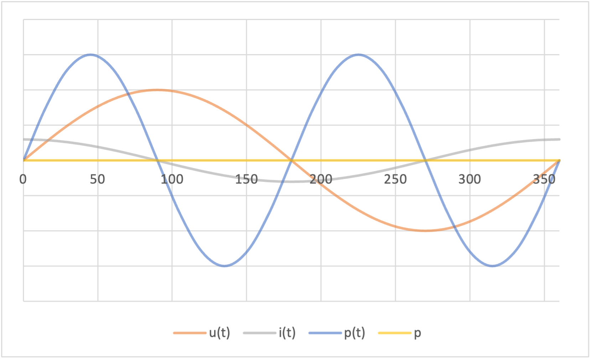

Kondensator im Wechselstromkreis
Das Verhalten eines Kondensators an sinusförmigen Wechselspannungen unterscheidet sich nun wesentlich vom Verhalten an Gleichspannung:
-
Da ein Wechselstrom ständig seine Richtung ändert, die Elektronen sich also hin und her bewegen, ist ein Kondensator für Wechselströme nicht mehr sperrend, sondern besitzt einen bestimmten Wechselstromwiderstand.
-
Der Kondensator wird im Wechselstromkreis ständig aufgeladen und wieder entladen, es flieβt deshalb auch ständig ein Wechselstrom durch den Kondensator.
Phasenverschiebung von dem Strom
Formel
$$ i_{C}\left( t\right) =\hat{i_C}\cdot \sin \left( \omega t+90^{\circ }\right) $$Herleitung
$$ i_{C}\left( t\right) =\frac{dq}{dt} $$ $$ mit\ q=C\cdot u_{C}\left( t\right) $$ $$\Leftrightarrow i_{C}\left( t\right) =C\cdot \frac{du_{C}\left( t\right) }{dt} $$ $$mit\ u_{C}\left( t\right) =\hat{u_{C}}\cdot \sin \left( \omega t\right) $$ $$\Leftrightarrow i_{C}\left( t\right) =C\cdot \hat{u_C} \cdot \frac{d\left[ \sin \left( \omega t\right) \right] }{dt} $$ $$\Leftrightarrow i_{C}\left( t\right) =\omega \cdot C\cdot \hat{u_C} \cdot \cos \left( \omega t\right) $$ $$ mit\ i_{C}=\omega \cdot C\cdot u_{C}\ und\ \cos \left( \omega t\right) =\sin \left( \omega t+90^{\circ }\right) $$ $$\Leftrightarrow i_{C}\left( t\right) =\hat{i_C}\cdot \sin \left( \omega t+90^{\circ }\right) $$ $$ \Rightarrow \varphi_{i,u} =90^{\circ }$$Bei einem idealen Kondensator an sinusförmiger Wechselspannung eilt der Strom gegenüber der Spannung um \( 90^{\circ} \) voraus.
Kapazitiver Blindleitwert
Formel
$$B_{C}=\omega \cdot C$$Einheit
$$ \left[ B_{C}\right] =\frac{A}{V} =S$$ $$ S,\ Siemens$$Kapazitiver Blindwiderstand
Formel
$$X_{C}=\frac{1}{\omega \cdot C} $$Einheit
$$ \left[ X_{C}\right] =\Omega $$Ohmsches Gesetz
Formel
$$ X_{C}=\frac{U_{C}}{I_{C}} $$Leistungskurve
Kapazitive Blindleistung
Formel
$$ Q_{C}=U_{C}\cdot I_{C} $$Einheit
$$ \left[ Q_{C}\right] =Var$$ $$Var,\ Volt-Ampère-reaktiv$$Bemerkung
Die Blindleistung wird Blindleistung genannt da ihr Mittelwert Null ist. Beispiel: Ein blinder Passagier ist nicht da oder vorgesehen so wie die Leistung hier.